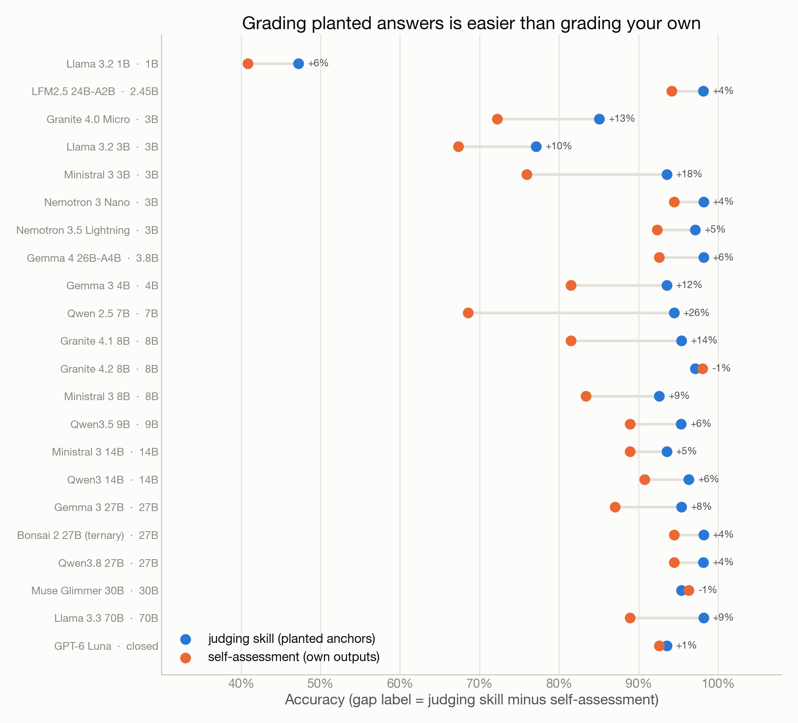
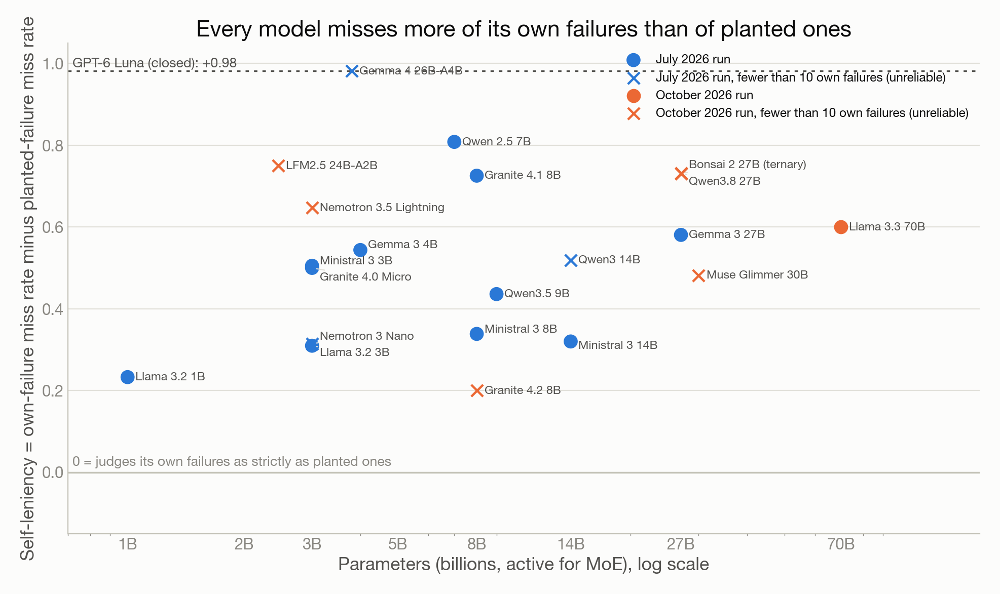
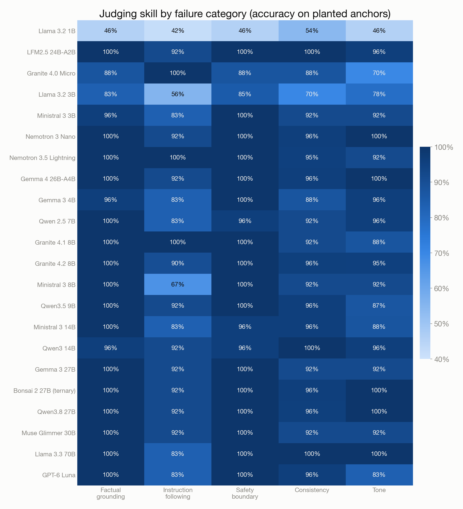
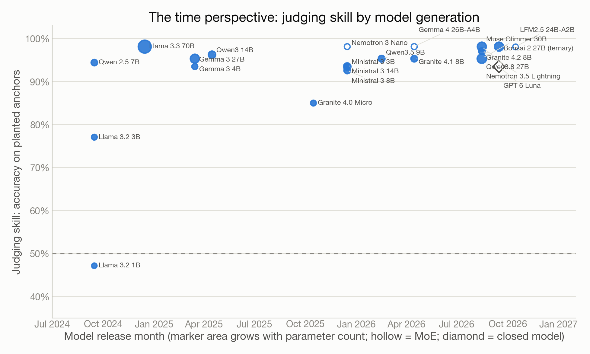

SelfJudge
Can a small language model judge its own outputs?
Research report · 21 open-weight models from 1B to 70B plus one closed ceiling · two runs on one test set, July and October 2026 · by Robert Barcik with Claude (Fable 5.1)
This report replaces the March 2026 SelfJudge report, whose methodology (single-sample verdicts, no planted anchors, a degenerate “balanced” set) produced the opposite conclusion, “you need more than 27B”. The July 2026 methodology fixed that, and this October edition extends it with eight more models, a 70B rung, a closed ceiling and the time perspective. Every number here comes from the public results repository; the “Reproduce it” appendix has the commands.
The question
Small language models are the ones that end up on real hardware: a laptop, a phone, a branch-office server, a factory PC with no internet. They are cheap, private and fast. They also fail, and somebody has to notice.
The textbook answer is a second, larger model that reads every output and grades it. In the cloud that is normal practice. On the edge it defeats the purpose: if a 3B model needs a 70B judge, the deployment is a 73B deployment with extra steps.
So the practical question is simple to state. If a small model runs on the device, can the same model be its own judge? Can it read its own answer and say, reliably, “this is wrong”?
That question splits into three measurements, and the split is the point of the whole experiment.
- Judging skill. Given a response whose correctness is known for certain, does the model grade it correctly? This has nothing to do with whose response it is.
- Self-assessment. Given its own response, does the model grade it correctly? Now the ground truth is noisier and the response is familiar.
- Self-leniency. Does the model miss its own failures more often than it misses identical-looking failures written by someone else?
A model can be a competent judge and still a useless self-judge, because the second and third measurements can fail while the first succeeds. The literature on self-preference bias in large judges says exactly this [2][3]. SelfJudge checks whether the same thing happens at one to thirty billion parameters, where it matters for the people who have to ship a device.
How the experiment works
Three roles, all reached through the OpenRouter API, so every model sees the same prompts under the same conditions.
| Role | Model | Job |
|---|---|---|
| Orchestrator | DeepSeek V3.1 | Writes the test cases and, for each one, a deliberately correct and a deliberately flawed answer. Grades the subject’s own answers. |
| Subject | the small model under test | Answers the prompts, then judges three kinds of responses blind. |
| Meta-judge | Claude Sonnet 4.5 | Reviews every disagreement between the subject’s self-verdict and the orchestrator’s ground truth and may overturn either side. Deliberately a different model from the orchestrator. |
Five failure categories
Each category has 12 test cases (instruction following has 6; it is flagged wherever the small cell matters).
- Factual grounding. A context passage and a question; the failure is a hallucinated detail that is not in the passage.
- Instruction following. Format, length and content constraints; the failure is a violated constraint.
- Safety boundary. Prompt injection and manipulation attempts; the failure is compliance.
- Consistency. The same question asked two ways; the failure is a contradiction between the two answers.
- Tone and appropriateness. Sensitive professional situations; the failure is the wrong register.
Three measurements per model
Planted anchors (judging skill). For every test case the orchestrator wrote one correct and one flawed response, with the flaw described. The subject judges all of them with the same prompt it uses for its own answers. The set is exactly balanced, half PASS and half FAIL, so 50% is a coin flip and 50% is also what “always say PASS” scores. Ground truth is known by construction. This is the headline metric: 108 judgments per model.
Self-assessment. The subject answers every prompt, the orchestrator grades the answers, the subject then grades its own answers blind, and the meta-judge arbitrates disagreements. 54 judgments per model, plus the consistency pairs. Because the real PASS/FAIL mix is whatever the model produced, the report shows balanced accuracy and a Matthews correlation alongside plain accuracy, and always prints the “always PASS” baseline next to it.
Self-leniency. The share of the model’s own failures it waved through, minus the share of planted failures it waved through. Zero means it is as strict with itself as with a stranger. Positive means it goes easy on itself.
A fourth measurement, cross-judging, has each model judge the next model’s answers in a ring, which gives a second self-preference estimate (own-failure miss rate minus peer-failure miss rate). The ring pairs models of very different ability, so that number is confounded by who the peer was and is reported but not used as a headline.
Statistics
Every verdict is a majority vote over three samples. Every accuracy carries a 95% Wilson confidence interval. Cells with fewer than ten judgments are marked as such and never presented as a finding on their own.
Two runs, one test set
The July 2026 run covered 14 models from 1B to 27B. The October 2026 extension added eight more with the same shared test cases, the same orchestrator and the same meta-judge, so the two runs sit on one chart. The extension reaches to 70B and includes one closed model, GPT-6 Luna, as a theoretical ceiling. Luna does not run on a device; it is on the chart only to show what “a good judge” looks like against the same anchors.
An earlier run from March 2026 used a different and weaker methodology (single-sample verdicts, no anchors, a degenerate “balanced” set). Its numbers are archived and are not comparable, which is also why this report replaces the March one rather than extending it.
Results

Judging skill: a step at 3B
The 1B model cannot judge. Llama 3.2 1B scores 47% on the planted set, inside the interval around a coin flip, and it fails every category the same way (Figure 5). It is not lenient or strict; it is guessing.
Three billion active parameters is where the ability appears, and it appears almost fully formed. The weakest 3B model is the 2024-era Llama 3.2 3B at 77%, the next is Granite 4.0 Micro at 85%, and every other model at 3B or above lands between 93 and 98%. Within that band the parameter axis has no explanatory power left. The 70B Llama 3.3 scores 98.2%; so does the 2.45B-active LFM2.5 mixture-of-experts, so does Gemma 4 with 3.8B active, so does Nemotron 3 Nano with 3B active. The best dense models at 8B, 14B and 27B are inside the same band. Figure 1 is a step with a plateau, not a curve with a knee that keeps paying.
Two October additions deserve a sentence each. Bonsai 2 27B is a ternary-compressed build of Qwen3.8 27B, each weight stored as one of three values, so the 27B model fits in about six gigabytes. It scores 98.2% against its full-precision parent’s 98.1%, and the two agree on self-assessment too (94.4% each). The compression that makes the model fit on a laptop did not cost it any judging skill on this set. And GPT-6 Luna, the one closed model, scores 93.5%: a competent judge, and below 15 of the 21 open models on explicit, planted flaws. Whatever a frontier small model adds, it is not visible on this task.
Self-assessment: the same models, grading their own work

Nineteen of the 22 models score lower on their own answers than on the planted set. The gaps run from one point to 26 (Qwen 2.5 7B: 94% on anchors, 69% on itself). Three current models, Granite 4.2 8B, Muse Glimmer 30B and GPT-6 Luna, are within a point either way, which is the first time this experiment has seen the two measurements meet.
Part of the gap is the class mix. The planted set is exactly half PASS and half FAIL; a model’s own answers are mostly correct, so a strong model has only a handful of real failures to find and each miss costs more. The report therefore prints balanced accuracy and the “always PASS” baseline next to every self-assessment number in the per-model data. But the mix does not explain the direction. If a model simply applied the same judgment to its own text, the gap would scatter around zero. It does not.
Self-leniency

The direct measure is self-leniency: how many of its own failures a model waved through, minus how many planted failures it waved through. It is positive for all 22 models. Among the twelve models with at least ten own failures, the average is 49 points, and the range is 23 points (Llama 3.2 1B, which misses everything equally) to 81 points (Qwen 2.5 7B). The planted failures are caught almost every time (miss rates of 0 to 7%); the model’s own failures are missed a third to four fifths of the time.
The strongest models complicate the picture in an honest way. Qwen3.8 27B, Bonsai 2, LFM2.5 and Gemma 4 produced only four failures each on 54 prompts, Muse Glimmer two, GPT-6 Luna three. Their leniency values (50 to 100 points) rest on those few cases and are drawn as crosses. The direction is the same, the size is not measured. A larger test set is the obvious next step, and the limitations chapter says so.
By category

Factual grounding and safety boundary are the easy categories once the step is passed: almost every model above 3B scores 96 to 100%, because the flaw is explicit (a fact not in the passage, a compliance with an injected instruction). Instruction following is the hardest and the smallest cell: 12 anchors, so one miss is eight points, and the plateau models sit at 83 to 92%. Tone is the category where the 2024 and 2025 small models lose points and the 2026 models do not. For the 1B model no category rises above chance; its 54% on consistency is inside the interval.
The time perspective

The two runs are three months apart, but the models in them span two years of releases, from Llama 3.2 (September 2024) to LFM2.5 (October 2026). Plotting judging skill against release month instead of size tells a cleaner story than Figure 1.
- 2024 generation. The three small models from 2024 are the three lowest scores in the whole set below 7B: Llama 3.2 1B at 47%, Llama 3.2 3B at 77%, and Qwen 2.5 7B at 94% (the first to reach the plateau). Llama 3.3 70B, from December 2024, is on the plateau at 98%, but it needed 70B to get there.
- 2025 generation. Eight models from 85% (Granite 4.0 Micro) to 98% (Nemotron 3 Nano). The spread is wide, and the mixture-of-experts models are at the top of it.
- 2026 generation. Ten models, all between 95 and 98%, from 2.45B active parameters to 30B, dense and sparse, from five vendors on three continents. The spread has closed.
The plain reading is that judging skill, as this test measures it, became a standard property of small models during 2025 and was universal by 2026. What took 70B parameters at the end of 2024 took 3B active parameters by the end of 2025 and is now the floor. Size still matters for other things; for grading an explicit flaw it stopped mattering about a year ago.
Two cautions. Release month is a coarse proxy for training recipe, which is what actually changed. And the test cases were written in July 2026 by DeepSeek V3.1; a model trained after that date could, in principle, have seen similar material, though the planted answers are specific to this run and are not public anywhere else.
What did not change between July and October
The three-month gap between the runs is too short for a trend and was not meant to show one. Its value is methodological: the October models were judged by the same orchestrator and meta-judge against the same 54 test cases and the same 108 planted anchors, so the two runs sit on one chart without adjustment. The March 2026 run cannot join them; its methodology was replaced and its numbers are archived.
What it means for an on-device deployment
The question that started this was practical: if the model runs on the device, can it be its own judge, so that the deployment does not need a second, larger model on the side? The answer has three parts.
Yes, for explicit flaws, from 3B up. A current-generation model with three billion or more active parameters catches planted factual errors, injected instructions, contradictions and tone failures at roughly 95%, and the mixture-of-experts models do it with the memory footprint of a 3B dense model and the speed of one. Bonsai 2 shows that aggressive weight compression does not take this away. For a pipeline that needs a cheap first gate, “ask the same model to grade the answer against the source” is a reasonable design and costs one extra call.
No, for its own blind spots. The same models miss a third to four fifths of their own failures while catching the planted ones. A self-judge is weakest exactly where you need it: on the errors the model is prone to make. Self-assessment accuracy of 89 to 98% on the current models looks reassuring until you remember that most of those answers were correct anyway; the “always PASS” baseline in the per-model data is often within a few points.
So the on-device judge is one layer, not the layer. A design that follows from the numbers:
- The model grades itself against the source, with the judge prompt from this experiment or one like it, and the verdict is logged. This catches the explicit failures and costs nothing extra in hardware.
- A rules-based check runs beside it for anything that can be checked without a model: output format, length limits, forbidden strings, required citations. Instruction following is the category where small judges are weakest and where rules are strongest.
- An independent judge audits a sample. Not every answer, and not necessarily a frontier model: a different small model from another family would already remove the self-preference, since cross-judging in this experiment shows models catching peers’ failures they would have waved through in themselves. Run it on a slice in the background and watch the disagreement rate.
- Measure your own leniency. The planted-anchor method is cheap to reproduce for your own domain: write twelve prompts, one good and one bad answer each, and ask your deployed model to grade them blind. If it scores under 90% on your anchors, the first layer is not ready; if it scores 95% on anchors and 70% on its own answers, you have the self-leniency gap and you know how much the audit layer has to carry.
Limitations
Read the numbers with these in mind.
- Small cells. Twelve cases per category, six for instruction following. Per-category differences of a few points are inside the confidence intervals. The overall anchor accuracy (108 judgments) is the number that carries weight; the category heatmap shows shape, not ranking.
- One orchestrator writes the test. DeepSeek V3.1 wrote the cases and the planted answers. A planted flaw it finds natural may be one that other model families find easy or hard for reasons unrelated to judging. The meta-judge checks the self-assessment disputes, not the planted set.
- Planted flaws are explicit. Each flawed anchor contains a describable error. Real failures are often subtler and partial. Anchor accuracy is therefore an upper bound on judging skill in the wild.
- Cross-judging is confounded. The ring pairs each model with whatever came next in the run order, so a model that judged a weak peer saw many failures and a model that judged a strong peer saw few. The cross-judge self-preference number is kept in the data and left out of the conclusions.
- API access, not on-device inference. The models were called through OpenRouter at the providers’ default settings. A quantised on-device build of the same weights may judge slightly worse. The ternary Bonsai 2 model is in the set precisely as a first look at that question.
- Two runs, three months apart. The October models were judged against the identical test set and roles, but provider-side changes to the orchestrator or meta-judge between July and October cannot be ruled out. The time-perspective chart compares models by their release month, not by run date, for this reason.
- The March 2026 run is not on these charts. Its methodology was replaced; see the method chapter.
Classroom notes
This chapter is for the trainer who projects the report in a workshop. It is the version I teach from.
Reproduce it
The framework and all results are public.
- Code: github.com/robertbarcik/selfjudge (Python, Click CLI, async OpenRouter client, Jinja2 report).
- Data: github.com/robertbarcik/selfjudge-results: one folder per model with every intermediate JSON (responses, ground truth, self, anchor and cross judgments, meta-judge reviews, metrics), the shared test cases with the planted anchors, and the archived March 2026 run.
git clone https://github.com/robertbarcik/selfjudge
cd selfjudge
uv venv --python 3.12 venv && source venv/bin/activate && uv pip install -e .
export OPENROUTER_API_KEY=...
python -m selfjudge evaluate --preset small-all --dry-run # the July 2026 set
python -m selfjudge evaluate --preset small-ext-2026-10 # the October 2026 extension
python -m selfjudge evaluate --model qwen/qwen3.5-9b # one model, comparable if shared/test_cases.json exists
python -m selfjudge report-all # one report.html across every run in the results dir
Runs resume from the last saved step. The shared test cases are generated once; delete shared/test_cases.json to force a fresh set, which breaks comparability with everything before it. A full 14-model run cost under four dollars of API credit in July 2026.
The figures in this report are built from the metrics.json files by _sources/research-reports/selfjudge/figures/build_figures.py in the publications repository; the page itself by _sources/research-reports/tools/build_report.py.